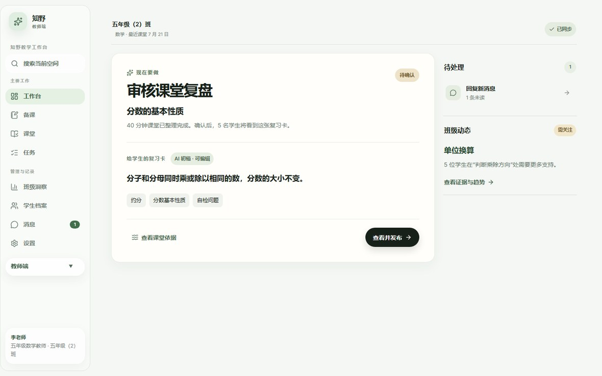
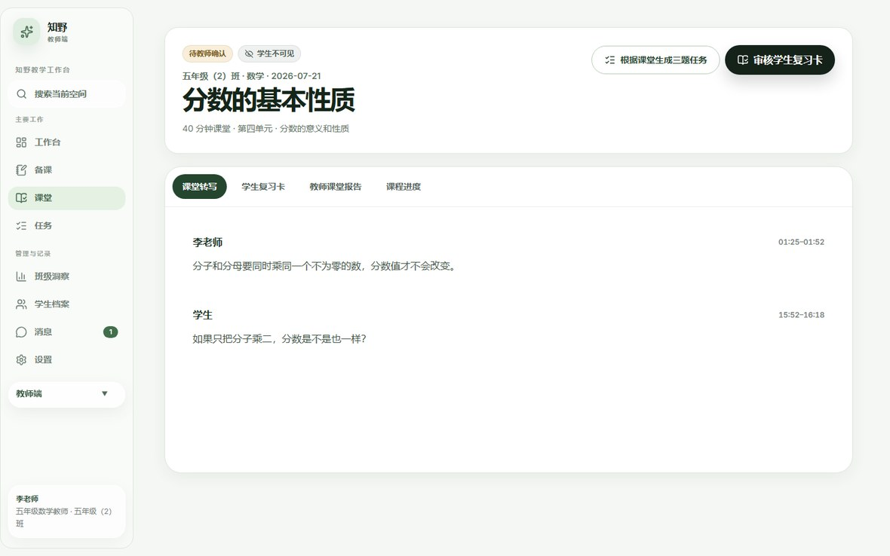
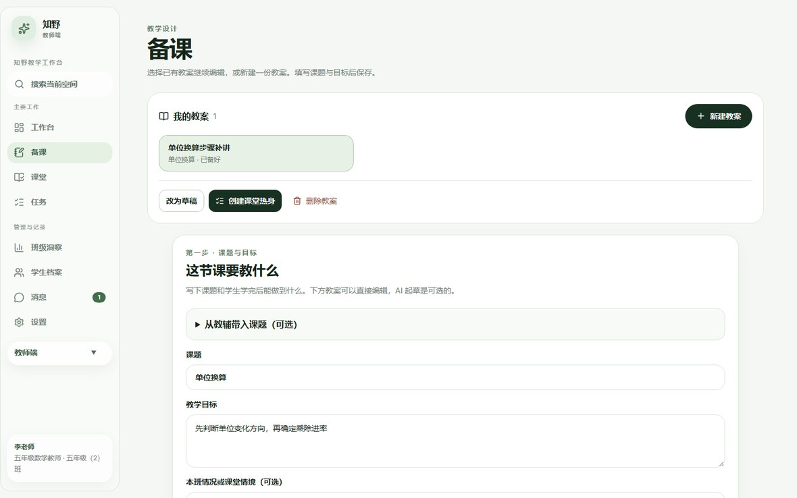
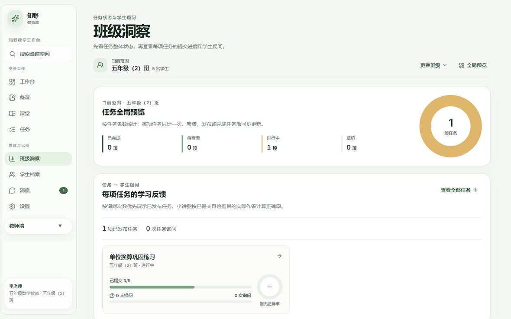
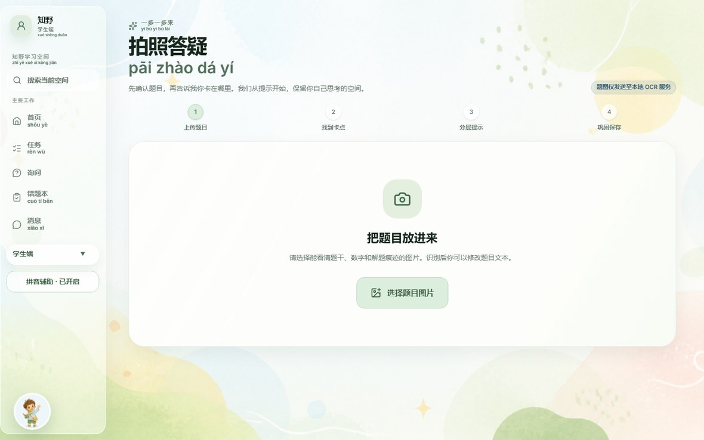
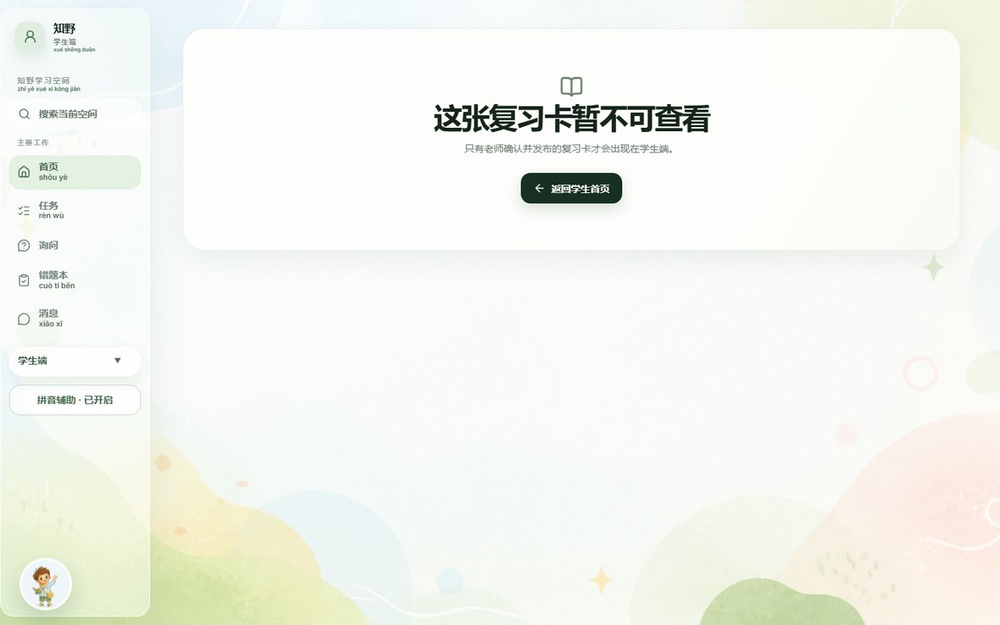
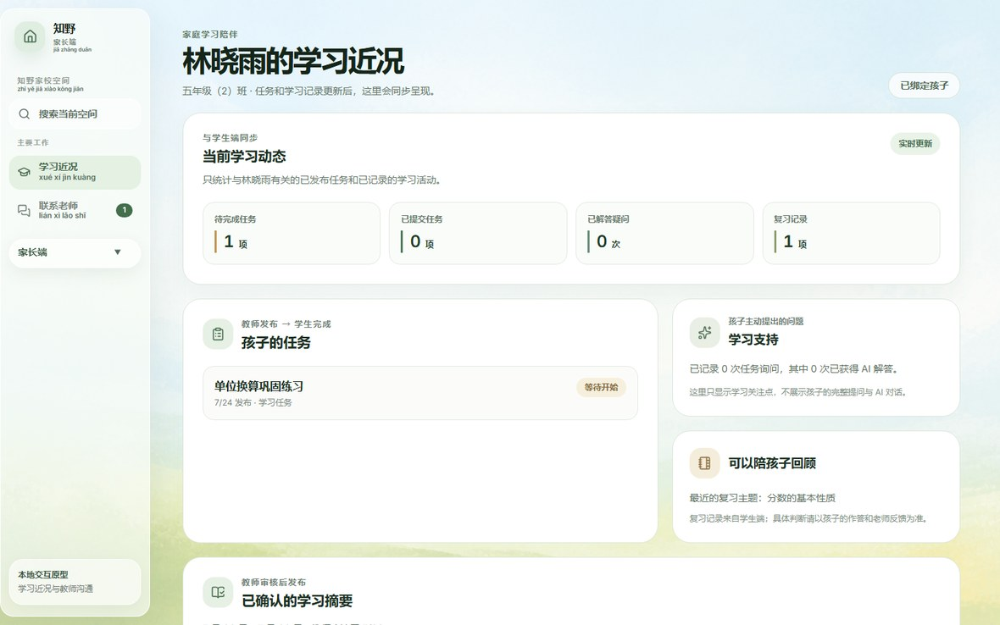
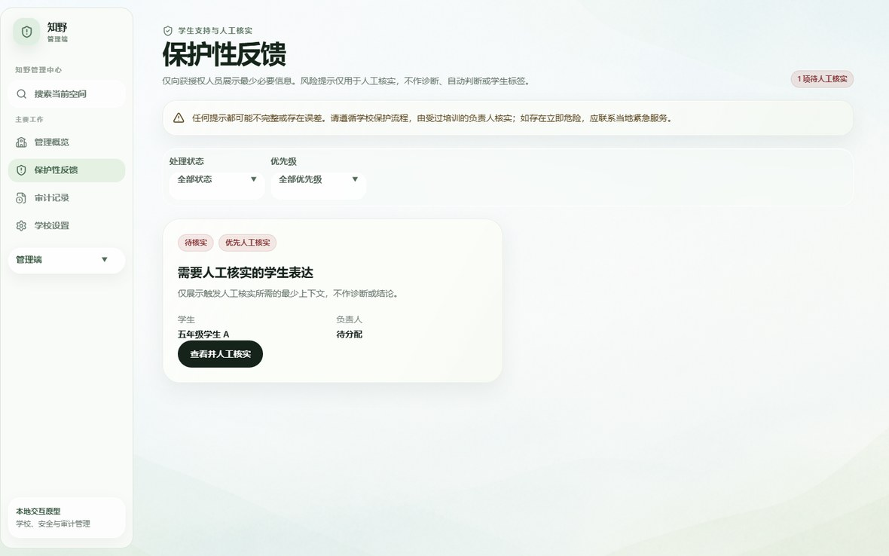

教师提交课堂录音与补讲目标，智能体自主完成转写、取证、归因、成稿；
教师审核确认后，复习卡、补讲教案与练习才抵达学生与家长。
输入：一节 40 分钟课堂的录音 + 一句补讲目标（如“根据这节分数课，为明天准备 5 分钟补讲”）。
执行：本地语音转写 → 提取带时间戳的课堂证据 → 归纳学习缺口 → 生成四项成果。
输出：学生复习卡、教师课堂报告、5 分钟补讲教案、3 题针对性练习，全部可编辑、可追溯。
门槛：教师确认并发布前，学生与家长看不到任何 AI 内容；课堂转写与教师报告永不公开。
它有明确目标（goal）、固定五步计划、可追踪的工具调用、真实的失败状态与单步重试，以及不可跳过的人工确认关卡。所有产出必须是结构化 schema，无效或无证据支撑的结果不能进入发布环节。
| 维度 | 已实现并可验证 | 明确未实现 / 边界 |
|---|---|---|
| 运行形态 | React 前端 + FastAPI 本地 AI 服务，一键启动；Vercel 静态演示站可访问 | 公网演示站 AI 默认关闭，且不跨设备共享教学数据 |
| 教学闭环 | 录音→转写→AI 初稿→教师审核→发布→学生复习/任务→班级聚合回流 | 无数据库、无账号体系，角色切换不是身份认证 |
| AI 能力 | FunASR 转写、PaddleOCR 识题、DeepSeek 11 类结构化生成，全部带 schema 校验 | 未接入检索增强、未做多智能体协作 |
| 工程质量 | 前端 45 个测试文件 181 项通过；本地 AI 63 项通过；typecheck、生产构建、依赖审计通过 | 真实课堂音频的端到端验收需项目负责人提供获准脱敏录音 |
docs/evidence/ 逐日验收记录中核对；所有商业数字均标注“待验证假设”。教育数字化已解决“资源有没有”，尚未解决“课后个性化复盘有没有人做”。
国家教育数字化战略行动、智慧教育平台与“双减”政策先后落地，乡村学校的硬件与资源短板正在被补齐：一块白板、一根网线、一台笔记本已能进入课堂。但数字化的下半场是应用——把技术嵌进教师每天真实发生的工作流，而不是再增加一个需要学习的工具。
与此同时，生成式 AI 在 2024–2026 年迅速普及。乡村教师面对的矛盾非常具体：不用 AI，课后复盘做不完；直接用通用大模型，又不敢把课堂录音和学生照片交出去，也更不敢让模型直接对学生下结论。
一名村小数学教师通常带 2 个以上班级，周课时 18–25 节。课后可用于个别辅导、批改与复盘的时间被压缩到每天 30–60 分钟，且常被行政事务打断。
哪个知识点卡住、卡在哪一步，教师多凭记忆判断。缺少可回溯的证据，补讲选题只能“凭经验猜”，导致重复讲已经会的内容。
一次针对性补讲需要：定位卡点、写教案、找或编 3 道变式题。即便熟练教师也需 1–2 小时，且与本周本班实际错情脱节。
课后学生遇到不会的题，家里无人能辅导，只能带到第二天。问题堆积到下周，知识点已断层。
通用聊天机器人能“回答问题”，但无法接管流程：它不会去听一节完整的课，不会把结论锚定到课堂原话，不会在教师确认前拦住发布，也不会在模型失败时告诉教师“是哪一步失败、能否只重试这一步”。把这些能力拼起来，才是一个能上岗的数字员工。
知野的选择是：让 AI 做草稿与取证，让人做决定。系统接管“录音—转写—证据—复盘—成稿”的重活，把“是否讲给学生”的判断权完整留给教师。
| iCAN AI 应用创新挑战赛关注点 | 知野的对应设计 |
|---|---|
| 目标驱动，而非一问一答 | 一次任务有明确 goal（补讲目标）与固定五步执行计划 |
| 工具调用可观测 | 转写、证据提取、卡点归因、成果生成均为独立工具步骤，各有状态、摘要、耗时与错误 |
| 失败可恢复 | 四类真实失败（无麦克风、空录音、无模型 Key、网络断开）保留已成功步骤，仅重试失败步骤 |
| 人机协同边界清晰 | 教师确认是学生/家长可见内容的唯一门槛；AI 推断与课堂证据分区显示 |
| 儿童数据安全 | 音频与题图只在本地处理，仅文本交给云端模型；密钥不进入浏览器；原始音频即用即删 |
七个痛点来自教师课后工作的真实时序，按“发生频率 × 单次耗时”排序。
| # | 痛点 | 具体表现 | 直接后果 | 现有方案的不足 |
|---|---|---|---|---|
| P1 | 课后复盘吃掉整块时间 | 40 分钟课的转写、要点归纳、报告撰写需 20–30 分钟手工完成 | 教师加班，或干脆不做复盘 | 通用听转写工具只给文本，不给教学结论 |
| P2 | 学情判断缺证据 | 哪个知识点、哪一步卡住只能凭印象 | 补讲选题不准，重复讲已会内容 | 在线组卷平台只有分数，没有过程证据 |
| P3 | 补讲材料从零制作 | 定位卡点→写教案→编 3 道变式题，1–2 小时 | 材料与本周本班错情脱节 | 教辅题库按教材编排，不对应本班卡点 |
| P4 | 学生提问得不到及时回应 | 课后无人可问，家长辅导能力有限 | 问题堆积，知识点断层 | 拍照搜题类 App 直接给答案，不引导思考 |
| P5 | 家长信息不对称 | 家长只看到分数，看不到“卡在哪一步” | 家校沟通低效、焦虑传导 | 班级群消息刷屏，无结构化摘要 |
| P6 | 儿童数据与内容安全风险 | 学生语音、题图、姓名上传到不明服务 | 学校与教师不敢用，家长不信任 | 多数产品未做本地化处理与教师审核门槛 |
| P7 | 弱网与公用设备 | 乡村网络不稳定，常用共用电脑 | 上传中断、成果丢失 | 纯云端工具断网即不可用 |
复盘是一串动作，不是一次问答。工具只覆盖其中一环，剩下的手工环节依旧消耗教师整块时间。
模型可以生成通顺的建议，但若不能回到“课堂上到底说了什么”，建议就无法被教师采信。
面向儿童的内容一旦缺少人工确认，幻觉与不当推断会直接作用到学生身上。
| 痛点 | 知野的机制 | 可验证结果 |
|---|---|---|
| P1 | 浏览器录音 → 本地 FunASR 转写 → DeepSeek 结构化成稿，一次执行交付四项成果 | 教师只做审核与编辑，不做转写与归纳 |
| P2 | 课堂证据 EvidenceItem（原话 + 起止秒 + 来源）与推断 InferenceItem 分离存储 | 每条建议可回到转写原话与时间点 |
| P3 | 根据卡点生成补讲教案与 3 题练习，可一键转为班级任务 | 补讲材料与本班本课绑定 |
| P4 | 拍照识题 → 选择卡点 → 分层提示 → 复述 → 迁移题 → 错题本 | 先提示后讲解，不给一步到位的答案 |
| P5 | 家长摘要由教师生成并确认后发布，仅含聚合指标 | 不展示孩子完整提问与 AI 对话 |
| P6 | ASR/OCR 本地运行，音频题图即用即删；密钥只在本机环境变量 | 公开演示站无法调用本机 AI，也无密钥可窃 |
| P7 | 原型数据保存在浏览器，断网可继续编辑与查看；失败有中文原因与重试 | 断网不伪装成功 |
从三个角色的真实一天出发，倒推功能边界。
下午第三节课讲“分数的基本性质”。放学后她打开知野教师端，点击“开始新课堂录音”（课堂音频投屏播放即可回采），输入目标“为明天准备 5 分钟补讲”。3 分钟后看到转写、证据、复习卡草稿与补讲方案；她把方案改成“用米尺和厘米尺做一次单位方向对照练习”，确认发布。
晚上写作业遇到单位换算题，打开“拍照答疑”，拍下题目，选择“卡在某一步”。系统先给提示，她复述思路后拿到一道变式题，题目自动进入错题本。她只看到老师发布的复习卡和自己的错题。
周末打开“学习近况”，看到本周学到什么、主动完成的事、一条鼓励建议和老师的留言。看不到排名、同学对比，也看不到孩子和 AI 的完整对话。
| 群体 | 画像 | 核心诉求 | 使用频次与场景 |
|---|---|---|---|
| 核心用户 乡村小学数学教师 | 28–45 岁，带 2 个以上班级，非信息技术背景，常用手机 + 一台公用电脑 | 把课后复盘时间从 30 分钟降到 5 分钟；补讲有据可依 | 每天 1–2 次，课后 10 分钟内；教室、办公室 |
| 直接受益 4–6 年级学生 | 识字量有限，需拼音辅助；课后无人辅导 | 有步骤地被引导想明白，而不是直接看答案 | 每天 1 次，居家写作业时；以手机为主 |
| 间接用户 家长/监护人 | 关心但不知如何介入，易被分数引发焦虑 | 知道孩子卡在哪一步、能做什么 | 每周 1–2 次；手机 |
| 组织用户 学校管理者与保护负责人 | 需履行儿童保护与数据合规责任 | 风险表达被安全转交，全程可审计 | 按需；电脑 |
| 潜在付费方 区域教育局、出版社、公益项目 | 需要可规模复制的教师减负工具 | 按校部署、成本可控、数据合规 | 采购决策周期长 |
| 层次 | 内容 |
|---|---|
| 功能需求（F） | 课堂录音与转写、复盘成果生成、证据追溯、教师审核发布、失败可见与重试、备课与任务生成、学生分层答疑、结果回流、家长摘要、儿童保护与审计、四端工作台、拼音与无障碍（见第 4 节清单） |
| 非功能需求（N） | 可复现：锁文件 + 一键启动，空目录可从 README 跑通；可解释：结论必须可回溯到课堂原话；安全：本地优先、最小留存、密钥隔离、教师确认门槛；可用：1440×900 一屏看清流程、WCAG 2.1 AA、拼音辅助；可承受失败：真实阶段与中文错误，禁止假进度与伪装成功 |
| 明确不做 | 通用聊天机器人、第二个智能体、自动对外发布、未经验证的外部搜索、把课堂事实与模型推断混排、学生画像与排名 |
P0 = 参赛主链路必备；P1 = 完整闭环所需。每条都有可执行验收标准。
| 编号 | 需求 | 说明与验收标准 | 优先级 |
|---|---|---|---|
| FR-01 | 课堂录音与转写 | 浏览器 MediaRecorder 录音（可暂停/继续），本地 FunASR 转写为带时间戳的证据条目；空音频不得发出请求，无麦克风权限给出中文原因与重试 | P0 |
| FR-02 | 四项复盘成果 | 一次执行交付学生复习卡、教师课堂报告、5 分钟补讲教案、3 题针对性练习；缺一不可进入发布环节 | P0 |
| FR-03 | 证据可追溯 | 每条建议携带 evidenceIds，点击可展开转写原话与起止时间；AI 推断使用独立标签，不得伪装成课堂事实 | P0 |
| FR-04 | 教师审核与发布 | 复习卡可编辑、保存；发布前弹窗明示“学生将看到什么、什么不会公开”；状态 DRAFT→CONFIRMED→PUBLISHED，学生端未发布不可见 | P0 |
| FR-05 | 失败可见与单步重试 | 无麦克风、空录音、无模型 Key、网络断开四类失败显示具体中文原因；已成功步骤与成果保留，仅重试失败步骤 | P0 |
| FR-06 | 备课与任务生成 | AI 教案草稿（流程/示例/误区/建议/延伸）、三题练习、任务草稿均可逐段编辑；测验题答案必须属于选项，判断题归一化为“正确/错误” | P1 |
| FR-07 | 学生分层答疑 | 拍照识题（OCR 置信度 <0.65 要求重拍）→ 选卡点 → 分层提示 → 学生复述 → 变式题 → 写入错题本；不能跳过前置步骤直达答案 | P1 |
| FR-08 | 学生结果回流 | 按任务聚合匿名提交人数与完成率，<70% 标记“需要再练”，生成下一课教师草稿，不自动推送、不展示个人答案 | P1 |
| FR-09 | 家长摘要 | 教师生成并确认后家长可见；仅含主题、鼓励与教师留言，不含排名、同学对比、完整对话 | P1 |
| FR-10 | 儿童保护与审计 | 保护性表达不作为普通消息发送，转人工确认；风险案例仅展示最少必要上下文，不作诊断与贴标签；处置全程写审计 | P1 |
| FR-11 | 四端工作台 | 教师（8 页）、学生（8 页）、家长（2 页）、管理（4 页）；同一浏览器内可切换角色用于演示 | P1 |
| FR-12 | 拼音与无障碍 | 学生端可开启拼音辅助（含 AI 回复逐句注音）；AI 状态使用 aria-live="polite"；可点区域 ≥44px；颜色不是唯一状态信息 | P1 |
| NFR-01 | 可复现 | 空目录按 README 执行 pnpm install --frozen-lockfile → pnpm test → pnpm build → pytest 全部通过 | P0 |
| NFR-02 | 安全 | 浏览器不含模型密钥；AI 服务校验来源；公网模式邀请码换取 8 小时令牌并限流；临时文件即用即删 | P0 |
| NFR-03 | 可观测 | 任务有五步状态与摘要；无假进度条；失败信息可指导下一步动作 | P0 |
| NFR-04 | 响应式 | 1440×900 下主计划与成果同屏；<768px 切换底部导航，每端最多 5 个入口 | P1 |
| NFR-05 | 成本可控 | 公网演示 AI 可一键停用；模型调用受速率限制，避免演示被刷量 | P1 |
全部为开源或主流商用服务；本地零许可费用，模型按量付费。
| 类别 | 工具 / 框架 | 版本 | 用途与选型理由 |
|---|---|---|---|
| 前端框架 | React + TypeScript | 19.2 / 5.9 | 四端共用一套组件与类型；联合类型路由把“角色—页面—参数”约束在编译期 |
| 构建与开发服务器 | Vite | 8.0 | 毫秒级热更新；pnpm build 产出可托管静态包 |
| 样式与设计系统 | Tailwind CSS + 自建设计令牌 | 4.2 | 暖白/松绿/谷穗金三色令牌；玻璃表面、状态胶囊、抽屉等 12 个基础组件复用 |
| 测试 | Vitest + Testing Library + jsdom | 4.1 / 16.3 | 45 个测试文件 181 项，覆盖状态机、权限、schema 校验、四端页面渲染 |
| 图标 | lucide-react | 1.25 | 线性图标统一视觉重量 |
| 本地 AI 服务 | Python + FastAPI + Pydantic v2 | 3.12 / 0.139 | 异步上传、强类型请求体、结构化校验；与前端解耦，可独立部署为 Docker |
| 语音识别（ASR） | FunASR（SenseVoiceSmall + fsmn-vad + ct-punc） | 1.4 | 中文课堂语音本地转写，带时间戳；模型惰性加载，CPU 可跑 |
| 文字识别（OCR） | PaddleOCR | 3.x | 题图本地识别，子进程隔离，原生崩溃不会拖垮 API |
| 大语言模型 | DeepSeek API（deepseek-v4-flash） | — | 结构化 JSON 生成，temperature 0.2；仅接收文本，不接收音频与图片 |
| 数据契约 | Prisma + 自建 @zhiye/domain | — | 19 个模型的 schema 与迁移；领域层实现状态机、权限判定、事件与会话 Cookie |
| 包管理与工程 | pnpm workspace + tsc 项目引用 | 10.28 | 单锁文件、可冻结安装；tsc -b 全量类型检查 |
| CI / 部署 | GitHub Actions + Docker + Render + Vercel | — | 两个 CI 作业（前端与契约 / 本地 AI）；Render 常驻 Docker 承载公网 AI；Vercel 托管静态演示站 |
| 文档与协作 | Markdown 规格 + 逐日证据 | — | SPEC、UI-UX、设计说明、实施计划、8 份逐日验收记录，全部随仓库提交 |
| 组件 | 要求 | 说明 |
|---|---|---|
| Node.js | 20.19+ 或 22.12+ | 运行 Vite 与 Vitest |
| pnpm | 10.28.0 | corepack prepare pnpm@10.28.0 --activate |
| Python | 3.11–3.12（题图 OCR 推荐 3.12） | 安装 services/local-ai/requirements.txt |
| FFmpeg | 需在 PATH 中 | 浏览器录音格式转写需要 |
| DeepSeek API Key | 仅写入本机 .env.local | 不提交 Git、不入截图录屏 |
| 浏览器 | Chrome / Edge | 需要 MediaRecorder 与麦克风权限 |
| 磁盘与网络 | 预留数 GB | ASR/OCR 模型首次运行需下载 |
一个前端、一个本地 AI 服务、三层契约；公网演示用邀请码把模型能力关在笼子里。
packages/domain（状态机 / 权限 / 事件 / 会话）｜packages/db（Prisma 19 模型 + 迁移 + 种子）｜specs/SPEC.md（接口与数据契约）| 组件 | 职责 |
|---|---|
| React 四端 | 路由与角色壳层、录音状态机、AI 状态呈现、草稿编辑与发布确认、拼音与无障碍、原型数据持久化 |
| FastAPI 服务 | 接收音频/图片/文本，调度本地模型，调用云端模型，返回严格结构化结果与可读错误 |
| 转写工具 | FunASR 生成带时间戳的 EvidenceItem 列表；无有效人声时抛错并转为 422 |
| 识题工具 | PaddleOCR 在独立进程识别题图，返回文本与置信度；置信度不足要求重拍 |
| 生成工具 | 11 类结构化生成任务，统一 prompt 契约 + JSON mode + schema 校验 + 一次补救重试 |
| 编排层 | RecapJob 五步执行、状态保留、单步重试（详见 6.3） |
| 契约层 | 领域状态机与权限判定、Prisma 数据模型、接口规范，作为从原型走向真实服务的路线图 |
| 步骤 | 输入 | 输出 | 失败行为 |
|---|---|---|---|
| 1 transcribe | 课堂音频（或文本） | 证据列表（原话 + 起止秒） | 无人声 → 任务失败，保留空结果并提示重录 |
| 2 extract-evidence | 证据列表 | 校验后的证据列表 | 转写为空 → 失败，不进入后续步骤 |
| 3 identify-gaps | 目标 + 证据 | 学习缺口推断（必须引用证据 ID） | 目标为空或无证据 → 失败 |
| 4 generate-deliverables | 目标 + 证据 + 缺口 | 四项成果（复习卡/报告/教案/练习） | 模型失败 → 仅此步失败，前 3 步保留 |
| 5 teacher-review | 四项成果 | 教师确认后发布或下载 | 未确认 → 学生端不可见 |
queued → running → needs-review / failed；步骤状态 pending → running → succeeded / failed / skipped。重试规则：只允许重试 failed 步骤，上游成功结果作为输入复用——转写不会因为生成失败而重复执行，也不会重复计费。结构化输出是防幻觉的第一道闸门；教师确认是第二道。
| 机制 | 实现 | 拦住什么 |
|---|---|---|
| 严格 schema | 所有上下文模型 extra="forbid"；字段类型、长度、上下界显式声明 | 模型自行加字段、把字符串写成数组 |
| 证据引用约束 | InferenceItem.evidence_ids 必须引用已存在的 EvidenceItem，否则 schema 拒绝 | 没有出处的“建议” |
| 纯文本闸门 | TextOnly 拒绝控制字符、data URL / http(s) URL、SVG 标记、base64 编码的图片字节 | 提示注入与二进制夹带 |
| 业务规则校验 | 测验恰好 3 题、答案必须是选项之一、判断题归一化为“正确/错误”；迁移题答案必须在选项内 | 无法使用的题目草稿 |
| 低温与 JSON 模式 | temperature 0.2，response_format=json_object；prompt 明确“不得编造未出现的事实、不得诊断学生” | 发散与格式漂移 |
| 一次补救重试 | 关键任务在 schema 校验失败后，用同一份已批准上下文补一次强约束重试，仍失败则报错 | 截断的 JSON 直接抛给教师 |
| 前端二次校验 | isCompleteLessonAnalysis 等类型守卫在渲染前逐字段检查 | 不完整数据进入界面 |
音频与题图只进本地服务，处理完立即删除临时文件；只有转写文本与上下文交给云端模型。日志不写题目图片、课堂原文与敏感反馈正文。
模型 Key 只存在于本机 .env.local 或 Render 私密环境变量；浏览器只持有 VITE_ 公开参数，/health 只返回布尔值不泄露 Key。
AI 服务中间件校验 Origin 白名单；公网模式启用邀请码换取 HMAC-SHA256 签名令牌（8 小时），所有 AI 路由服务端验签。
滑动窗口限流：全局 120 次/小时、单令牌 30 次/小时、邀请码兑换单 IP 10 次/15 分钟；超限返回 429 与 Retry-After。
保护性表达不作为普通消息发送，需人工确认后转交；风险案例仅展示最少必要上下文，不作诊断、不自动判断、不贴标签；处置全程写审计。
OCR 在独立子进程运行，原生崩溃不会拖垮 API；模型惰性加载，未配置 Key 时其他功能仍可启动。
| 故障 | 界面表现 | 处理动作 |
|---|---|---|
| 无麦克风权限 | “无法访问麦克风：…” + 状态“处理失败” | 提供“重试录音”，不产生 AI 初稿 |
| 录音为空 | “没有录到有效课堂音频，请检查麦克风权限后重试。” | 请求根本不发出，节省算力与费用 |
| 未配置模型 Key | “未设置 DEEPSEEK_API_KEY” | 转写仍可用；生成步骤失败并可重试 |
| 网络断开 | “本地 AI 服务未启动，请运行 start-local-ai.ps1” | 保留已成功步骤，恢复后仅重试失败步骤 |
部署形态、可复现性与质量门禁。
| 形态 | 组成 | 适用 | 边界 |
|---|---|---|---|
| 本机演示 | pnpm dev（8443）+ start-local-ai.ps1（8787） | 评委验收、真实录音演示、离线教学 | 数据只在本机；角色切换不是身份认证 |
| 公网 AI 服务 | Render Docker（新加坡，1c-2g）+ 邀请码 + 限流 | 让公网演示站也能调用 AI | 单进程内存限流与任务记录，重启即清空 |
| 静态演示站 | Vercel 托管 dist/ | 链接即看的三端界面 | 每访客数据仅在自己浏览器，AI 默认关闭 |
packages/db 与 packages/domain 已把这套契约写好，但前端尚未连接。# 空目录从零复现（Windows PowerShell） git clone https://github.com/PaperY0/Zhiye cd Zhiye corepack enable; corepack prepare pnpm@10.28.0 --activate pnpm install --frozen-lockfile Copy-Item .env.example .env.local # 只在本机填入 DEEPSEEK_API_KEY .\scripts\start-dev.ps1 # 同时启动前端、本地 AI 并打开教师端 # 质量门禁（CI 中同样执行） pnpm test # 45 个测试文件 / 181 项通过 pnpm typecheck # tsc -b 全量类型检查 pnpm build # 生产构建 pnpm audit --audit-level moderate python -m pytest services/local-ai -q # 63 项通过
| 层级 | 覆盖内容 |
|---|---|
| 单元 / 组件测试 | 录音状态机、课程状态机、任务状态机、练习评分、AI 草稿校验、教师设置、路由解析、四端页面渲染与无障碍标签 |
| 服务契约测试 | 11 类生成任务的上下文与响应 schema、防注入闸门、失败重试、五步编排与状态保留、邀请码与限流 |
| 领域与数据契约 | confirmLessonArtifact / publishLessonArtifact 状态机、权限判定、事件、会话 Cookie；Prisma schema 与种子数据 |
| 人工验收 | 逐日证据记录 + 1440×900 无头浏览器截图核对 + 演示脚本计时彩排 |
Zhiye/ ├─ src/ React 前端：app（路由/原型存储/夹具）、features（四端页面）、 │ components（壳层/共享/工作区/拼音）、services（AI 客户端与设置） ├─ services/local-ai/ FastAPI：server（接口与鉴权限流）、recap_tools（转写/证据/归因/生成）、 │ recap_job（五步编排与重试）、schemas（Pydantic 契约）、generation、ocr_worker ├─ packages/domain/ 领域状态机、权限、事件、会话 Cookie（含测试） ├─ packages/db/ Prisma schema、迁移、种子数据 ├─ specs/ SPEC、UI-UX、设计提示词 ├─ docs/ 部署与验收、演示讲稿、逐日证据、实施计划 └─ scripts/ 一键启动与部署脚本
教师端 8 个页面，围绕一条主线：把一节课变成可发布的教学资产。
| 页面 | 功能 | 关键交互 |
|---|---|---|
| 工作台 | “现在要做”单卡导向：按课程状态优先级给出下一步动作；右侧待处理与班级动态 | “查看并发布”“查看课堂依据”“回复新消息”“查看趋势与洞察” |
| 课堂 | 课堂记录列表与状态筛选（待开始/进行中/处理中/失败/AI 初稿/已发布，带计数） | “开始新课堂录音”；删除可撤销；卡片显示时长、同步状态、学生可见性 |
| 课堂详情 | 四个标签页：课堂转写、学生复习卡、教师课堂报告、课程进度 | 复习卡编辑与保存；“确认并发布”二次确认；AI 进度建议可一键采纳；转写与报告永不公开 |
| 备课 | 教案列表与编辑器：课题与目标 → AI 起草流程/示例/误区/建议/延伸 → 逐段编辑 | “从教辅带入课题”“用 AI 起草教学流程”（替换前确认）；可转课堂热身为任务 |
| 任务 | 班级任务创建与跟进：关联课堂/教案/题组，AI 补全任务草稿与三题 | “用 AI 补全任务草稿”“重新生成三题”；保存即为草稿，不立即发给学生；逐份评分、发布、提醒 |
| 班级洞察 | 任务状态饼图、每项任务提交进度与正确率、询问次数与最新疑问 | “查看全部任务”；仅显示班级聚合，不展示个人答案 |
| 学生档案 | 班级切换、概览、CSV 导入（姓名列必填、班级白名单校验）、学生增删改 | 批量导入不创建新画像系统 |
| 学生详情 | 时间线（已记录事实 / 待核实）、可核实事实、教师笔记、AI 家长摘要与观察草稿 | 无证据时拒绝生成；“采纳并发布 / 采纳观察 / 忽略草稿”；笔记仅教师可见 |




每个页面只有一个主操作：录音、审核发布、生成任务、查看洞察。次要操作收进抽屉或次级按钮。
所有 AI 产出默认标记“AI 草稿 / AI 初稿 · 教师可编辑”，可改、可弃、可不发布。
“查看课堂依据”一步展开转写原话与时间；AI 推断用独立标签，不与课堂事实混排。
| 场景 | 行为 |
|---|---|
| 学生发来保护性表达 | 教师端弹出确认：“不会作为普通消息发送”，可选择“转入保护流程演示”；系统不自动判断、不报警、不外发 |
| 新建家长会话 | 需填写监护人姓名以建立绑定关系，未绑定不出现会话 |
| 附件 | 明确标注“仅本地预览，不会上传” |
| 教师设置影响 AI | 姓名/班级/教材/章节作为默认值；详细程度、是否引用课堂证据、是否优先生活化例子控制表达方式；“发布前需教师确认”可关闭以适配不同试点流程；通知、保留期等字段不送入模型 |
| 重置演示数据 | 二次确认后恢复脱敏夹具，每次彩排从同一状态开始 |
学生端 8 个页面 + 全局陪伴助手，原则是“先提示、后讲解，给思考留空间”。
| 页面 | 功能 | 关键交互 |
|---|---|---|
| 首页 | 只展示老师已发布的复习卡、最新任务、最近错题与学习交流 | “开始复习”“打开这项任务”“查看消息”；未发布内容不出现 |
| 复习卡详情 | 已发布课堂重点 + 知识点标签 + 自评 | “我已理解 / 还需要练习（推荐任务）/ 我想问老师（跳转消息）” |
| 拍照答疑 | 四步流程：上传题目 → 找到卡点 → 分层提示 → 巩固保存 | “确认题目继续”“再给我一点提示”“我想看完整讲解”“我来复述”“保存到错题本”“再问一道题” |
| 任务 | 只看面向自己的非草稿任务；测验在线作答自动评分 | “开始任务 / 标记为已完成”；“这项任务有疑问？去询问 AI” |
| 询问 | 按任务提问，按询问数排序；可逐题解答 | “询问这项任务”“解答第 N 题” |
| 错题本 | 按学科/知识点/时间/掌握度筛选与统计；三个来源（答疑、测验、任务询问） | 改掌握状态、复习笔记、复习提醒（仅本地） |
| 消息 | 仅本班教师私聊与教师管理的班级群 | 普通反馈快捷输入；“需要帮助”显示儿童保护指引，不作为普通消息发送 |
| 陪伴助手 | 全局悬浮“小野”，带拼音回复与页面跳转建议 | 回复可跳转拍照答疑、错题本、任务等；失败有本地兜底文案 |


| 页面 | 功能 | 关键交互 |
|---|---|---|
| 学习近况 | 与孩子同步的学习动态：待完成/已提交任务、已解答疑问、复习记录；教师审核后发布的摘要；可以陪孩子回顾的主题 | “联系老师”；摘要未确认时显示“还在等待教师确认” |
| 联系老师 | 与本班教师沟通，展示教师留言与已读状态 | 会话列表按角色过滤，仅显示绑定学生相关内容 |


| 页面 | 功能 |
|---|---|
| 管理概览 | 学校、班级与待处理风险的数量总览 |
| 保护性反馈 | 学生表达的人工核实台：仅展示最少必要上下文，可分配、备注、转交（年级/心理/校级负责人）、解决（二次确认） |
| 审计记录 | 按操作人、操作类型、日期筛选；“只展示必要的操作元数据，不展示学生表达” |
| 学校设置 | 学校与班级配置、数据保留期等字段（本地演示中仅保存在浏览器） |
AI 不是附加功能，而是把教师课后工作流整体接管的那一层。
| 任务类型 | 输入 | 输出 | 使用者与确认要求 |
|---|---|---|---|
| lesson-plan | 教材、章节、目标、课堂情境、证据、教具 | 教案：流程/示例/误区/建议/延伸 | 教师，逐段编辑后保存 |
| task-draft | 标题、目标、来源教案、学习证据、任务类型 | 任务标题/目标/完成标准/内容/支持提示 | 教师，保存为草稿 |
| quiz | 标题、主题、难度、聚焦点 | 恰好 3 题（单选/判断），含答案 | 教师，学生端预览不含答案 |
| remedial-plan | 知识点、步骤、影响人数、趋势、证据 | 补讲方案：目标/步骤/示例/理解检查 | 教师，采纳后进教案 |
| learning-reply | 主题、复习卡、学生问题 | 解释/示例/知识卡/下一步 | 学生即时；标注 AI 解答 |
| retell-follow-up | 主题、学生复述 | 反馈与跟进问题 | 学生即时 |
| tutoring | 题干、卡点、学生尝试 | 提示/关键步骤/讲解/复述要求/迁移题 | 学生即时；先提示后讲解 |
| task-inquiry | 任务内容、学生疑问、题目与标准答案 | 解答/疑点名称/复习建议 | 学生即时；标准答案不改动 |
| student-companion | 学生消息、当前页面 | 回复 + 拼音 + 页面跳转动作 | 学生即时；禁止输出 URL |
| parent-summary | 可核实事实列表 | 主题/鼓励/教师留言 | 教师确认后家长才可见 |
| student-inference | 事实与错题列表 | 证据/观察/建议支持 | 教师采纳后生效，禁止诊断贴标签 |
每一步都是可观测的工具调用：有状态、有摘要、有耗时、有错误码；失败只影响该步，已成功的转写与证据被保留并复用。这与“打开一个对话框提问”有本质区别——前者替代的是工作流，后者只替代了一次搜索。
课堂证据（原话 + 时间）与 AI 推断（带引用）在界面上分开显示；schema 强制推断必须引用已有证据。
prompt 明确“不得编造课堂事实、学生表现或学生标签”；教师偏好只能改变表达方式，不能覆盖课堂事实。
AI 只产出草稿；学生与家长可见的任何内容都必须经过教师确认，未确认即不可见。
| 环节 | 模型 | 为什么这样分工 |
|---|---|---|
| 课堂转写 | FunASR（本地） | 音频不出本机，带时间戳，可直接作为证据；CPU 可运行 |
| 题图识别 | PaddleOCR（本地） | 学生照片不进云端；子进程隔离避免崩溃扩散 |
| 结构化生成 | DeepSeek（云端） | 只接收文本与上下文，成本低、JSON 稳定，可随时切换供应商 |
transcribe_audio / extract_evidence / identify_learning_gaps / generate_deliverables），换成 Qwen、通义或本地开源模型不需要改动前端与业务流程。从空目录到看到第一个 AI 初稿，约 10 分钟（不含模型下载）。
# 1) 准备环境：Node 20.19+/22.12+、pnpm 10.28.0、Python 3.11–3.12、FFmpeg # 2) 安装依赖并准备环境变量 pnpm install --frozen-lockfile Copy-Item .env.example .env.local # 3) 只在本机 .env.local 中填入 DEEPSEEK_API_KEY（不要提交、不要截图） # 4) 一条命令同时启动前端、本地 AI 并打开教师端 .\scripts\start-dev.ps1 # 打开 http://127.0.0.1:8443/#/teacher/classroom
若 PowerShell 阻止脚本执行，先运行 Set-ExecutionPolicy -Scope Process Bypass。
# 窗口一：本地 AI 服务（默认 127.0.0.1:8787）
.\scripts\start-local-ai.ps1
# 窗口二：前端
pnpm dev
# 健康检查
curl.exe --noproxy '*' http://127.0.0.1:8787/health
# {"ok":true,"asr":"local-funasr","deepseek":true,"inviteRequired":false}
/health 返回 deepseek:false 表示未配置 Key 或服务未重载环境变量；此时转写可用，生成会失败并提示“未设置 DEEPSEEK_API_KEY”。首次运行 ASR/OCR 需下载本地模型，请预留磁盘与网络。| 入口 | 说明 |
|---|---|
| 默认数据 | 可重复的脱敏验收数据：五年级（2）班、“分数的基本性质”课堂、学生林晓雨及配套任务、错题、会话、摘要与风险案例 |
?data=empty | 查看空数据状态，用于检查空状态引导是否清晰 |
| 角色切换 | 欢迎页或左下角角色选择，切换教师 / 学生 / 家长 / 管理端；数据在同一浏览器内共享 |
| 重置演示 | 教师端“设置 → 重置演示数据”（二次确认），恢复到同一初始状态 |
| 公网演示站 | zhiye-demo.vercel.app：只托管静态前端，AI 默认关闭，各访客数据仅在自己浏览器 |
| 步 | 动作 | 界面反馈与注意点 |
|---|---|---|
| 1 | 课堂 → 开始新课堂录音 | 按当前设置班级创建课堂并打开录音面板；浏览器请求麦克风权限 |
| 2 | 开始录音（可暂停/继续） | 状态变为“录音中”；演示时播放脱敏课堂音频即可 |
| 3 | 结束并生成 AI 初稿 | 状态进入“正在整理课堂内容”：先本地转写，再交给 DeepSeek 生成草稿 |
| 4 | 查看 AI 初稿 | 四个标签页：转写（原话+时间）、复习卡（AI 草稿可编辑）、教师报告（仅教师）、课程进度 |
| 5 | 核对证据并编辑 | “查看课堂依据”展开原话；发现事实不足可直接修改或不发布 |
| 6 | 确认并发布 | 弹窗明示“学生将看到复习卡；转写与报告不会公开”；确认后状态变“已发布” |
| 7 | 延伸：生成任务 / 新建教案 / 看回流 | “根据课堂生成三题任务”；班级洞察查看提交进度与正确率，形成下一课草稿 |
| 步 | 动作 | 界面反馈与注意点 |
|---|---|---|
| 1 | 首页看复习卡 | 只出现老师已发布内容；没有则显示“目前没有新的复习卡” |
| 2 | 拍照答疑 → 选择题目图片 | 本地 OCR 识别；不清晰时要求重拍，识别后可先校对文本 |
| 3 | 选择卡点 | “完全没思路 / 卡在某一步 / 核对思路 / 检查答案”，决定提示层级 |
| 4 | 按提示思考 | “我想到了 / 再给我一点提示 / 我想看完整讲解”；讲解前需先尝试 |
| 5 | 复述并做变式题 | “我来复述”后获得反馈与一道迁移题 |
| 6 | 保存到错题本 | 自动记录题目、卡点与复述；可在错题本改掌握度与复习笔记 |
| 角色 | 流程 |
|---|---|
| 家长 | 学习近况 → 查看聚合指标与教师确认后的摘要 → “可以陪孩子回顾”主题 → 需要时“联系老师” |
| 管理端 | 管理概览 → 保护性反馈（先确认“查看最少必要信息”→ 分配 → 备注 → 转交 → 解决）→ 审计记录按人/操作/日期筛选 |
课程：待开始 / 录音中 / 已暂停 / 处理中 / 处理失败 / AI 初稿 / 已发布。状态同时用文字与颜色表达，不只靠颜色。
处理中显示真实阶段（“正在调用本地 FunASR 转写，再交给 DeepSeek 生成复盘”），不显示无意义百分比。
每个失败都伴随中文原因与“重试录音 / 仅重试生成”等明确动作；已成功步骤与成果保留。
课堂、教案删除后通过页面通知可立即撤销，不做静默破坏。
学生端左下角“拼音辅助 · 已开启”，可为界面与 AI 回复逐句标注拼音，适合低年级与识字量不足的学生。
键盘可完成主要流程；AI 状态用 aria-live="polite" 播报；图标按钮带可读标签；可点区域 ≥44px。
| 现象 | 原因与处理 |
|---|---|
| “本地 AI 服务未启动” | 未运行 start-local-ai.ps1；或端口 8787 被占用 |
| “未设置 DEEPSEEK_API_KEY” | 在 .env.local 填入 Key 后重启本地 AI 服务 |
| “没有识别到清晰的人声” | 录音太短、太轻或环境噪音大；靠近音源重录 |
| “题目文字不清晰，请重新拍摄” | OCR 置信度 <0.65；在光线充足处正面拍摄整题 |
| 公开演示版无 AI | 公网站默认不提供 AI；本地运行或使用带邀请码的公网 AI 服务 |
| 换设备看不到数据 | 原型数据只保存在当前浏览器；正式服务需数据库与账号（见 6.7） |
按此顺序讲，评委可在 30 秒内理解“智能体到底做了什么”。
| 时间 | 环节 | 讲解要点与操作 |
|---|---|---|
| 0:00–0:30 | 痛点 | “一位村小数学老师每天只有不到一小时做课后复盘，而知野把其中 25 分钟变成 5 分钟审核。” |
| 0:30–1:00 | 输入 | 教师端“课堂 → 开始新课堂录音”，输入目标“根据这节分数课，为明天准备 5 分钟补讲” |
| 1:00–3:00 | 智能体执行 | 展示五步：转写 → 证据提取 → 卡点归因 → 成果生成 → 等待审核；强调“音频先在本机 FunASR 转写，再交给 DeepSeek 生成教师可审核草稿” |
| 3:00–3:40 | 证据可追溯 | 展开两条转写证据（“分子和分母要同时乘同一个不为零的数”“如果只把分子乘二，分数是不是也一样？”），说明“为什么推荐补讲单位换算/不为零条件” |
| 3:40–4:10 | 教师审核与交付 | 修改一处复习卡 → 确认并发布 → 下载补讲包；强调“教师确认是唯一发布门槛” |
| 4:10–4:45 | 学生回流 | 切到学生端：只看到已发布复习卡；拍照答疑先提示后讲解；回到教师端班级洞察看聚合回流 |
| 4:45–5:00 | 技术与安全 | “本地优先处理儿童数据、证据必须可回溯、失败可单步重试、未确认不发布” |
| 演示 | 要点 |
|---|---|
| 断开 DeepSeek | 只有“生成补讲包”步骤失败，转写与证据保留，可“仅重试生成” |
| 清空转写 | 明确提示“没有识别到清晰的人声”，不生成任何成果 |
| 拒绝麦克风 | 显示权限原因与“重试录音”，不产生 AI 初稿 |
| 方向 | 判断与依据 |
|---|---|
| 政策顺风 | 教育数字化进入“应用深水区”，教师减负与因材施教是明确导向；乡村小规模学校的个性化辅导缺口最大 |
| 需求刚性 | 课后复盘是高频、耗时、可被结构化的动作，不依赖学校更换硬件，一台电脑即可开始 |
| 横向扩展 | 同一“录音→证据→草稿→教师确认”框架可复制到语文阅读、英语听说等学科；从单班到年级到区域教研平台 |
| 数据资产 | 在授权与脱敏前提下，班级级卡点聚合可反哺教材修订与教研，而非学生画像 |
从②到③的关键工程在 SPEC 中已定义：PostgreSQL + Prisma、Auth.js 邀请码会话、服务端 RBAC 与监护关系校验、对象存储与 deleteAfterAt 保留策略、BullMQ 异步任务。
| 收入来源 | 模式 | 说明 |
|---|---|---|
| 学校/区域订阅 | 按校年费（含教师端全部功能 + 学生/家长端） | 主收入；按班级数分档，含部署与培训 |
| 区域教研服务 | 年度服务费（聚合看板 + 教研报告） | 面向教育局与教研室，数据为班级级聚合 |
| 内容合作 | 与出版社教辅资源分成 | “从教辅带入课题”已预留资源目录结构 |
| 公益与硬件捆绑 | 公益项目资助、随乡村学校设备打包 | 降低首次采购门槛 |
| 项目 | 估算 | 说明 |
|---|---|---|
| 公网 AI 常驻实例 | 约 US$0.20/小时 ≈ US$146/月 | Render 新加坡 1c-2g；可按需启用以降低闲置成本 |
| 模型调用 | 按量计费 | 单次复盘约 1 次转写（本地）+ 1–4 次结构化生成；温度 0.2、限长控制成本 |
| 存储与带宽 | 随规模线性增长 | 音频即用即删，仅保留元数据与成果 |
| 交付与支持 | 试点期主要成本 | 教师培训、校本流程适配、反馈闭环 |
| 风险 | 影响 | 缓解措施 |
|---|---|---|
| 尚无持久化后端与认证 | 不能存放真实学生资料 | 如实标注为演示原型；SPEC 与 Prisma/domain 契约已就绪，试点前完成接入 |
| 模型幻觉 | 错误结论影响教学 | 证据引用约束 + schema 校验 + 教师确认门槛 + 推断单独标注 |
| 录音与儿童数据授权 | 合规与信任风险 | 只用获准脱敏音频；本地处理、最小留存、审计留痕、即用即删 |
| 公网成本与滥用 | 费用不可控 | 邀请码 + 令牌过期 + 多层限流 + 可一键停用公网 AI |
| 公网演示数据隔离 | 访客误解为真实服务 | 页面与文档明示“数据只在本浏览器、不跨设备” |
| 教师采纳门槛 | 功能闲置 | 保留教师既有习惯：可编辑、可弃用、可只用手工整理；设置项可调节确认强度 |
知野没有把聊天机器人塞进课堂，而是把“录音—转写—证据—复盘—审核—发布”这条教师每天都要走一遍的工作流整体接管。它用结构化契约约束模型的表达，用证据引用约束模型的依据，用教师确认约束模型的出口；失败时它说清楚哪一步坏了、能不能只修那一步。
这让 AI 在课堂里的位置变得清晰：做草稿、做取证、做重复劳动；把判断、取舍和面对学生的责任，留给教师。
| 项目 | 结果 |
|---|---|
| 前端测试 | 45 个测试文件 / 181 项通过（Vitest + Testing Library） |
| 本地 AI 服务测试 | 63 项通过（pytest，含 schema、防注入、编排、鉴权限流） |
| 类型检查 / 构建 / 审计 | tsc -b、vite build、pnpm audit --audit-level moderate 通过 |
| CI | GitHub Actions 两个作业：前端与契约、本地 AI |
| 逐日证据 | docs/evidence/day-01 … day-08，含失败边界与人工验收步骤 |
| 术语 | 含义 |
|---|---|
| RecapJob | 一次可追踪的复盘任务，含目标、五步计划、证据、推断与四项成果 |
| EvidenceItem | 课堂证据：原话 + 起止秒 + 来源，不可变 |
| InferenceItem | AI 推断：必须引用已有证据 ID，界面单独标注 |
| DRAFT→CONFIRMED→PUBLISHED | 成果状态机：草稿 → 教师确认 → 对学生/家长发布 |
| 卡点（stuckPoint） | 学生自选的困难类型：完全没思路 / 卡在某一步 / 核对思路 / 检查答案 |